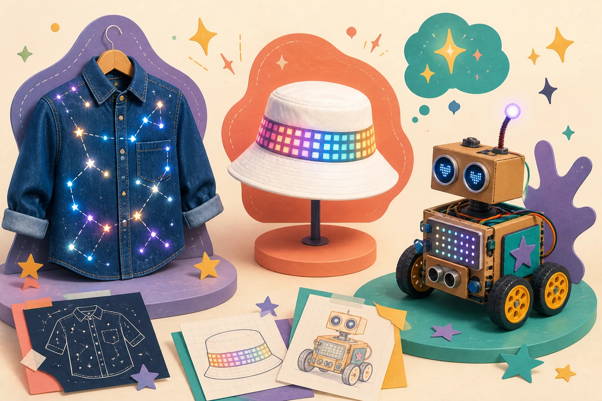

Work individually
Wearable Technology
Create two connected projects that express your own future vision.
- You create
- LED denim shirt + pixel hat
- You program
- micro:bit with MakeCode
- You submit
- Your own proposal
Stauffer Femineers · 2026–2027
Imagine it. Build it. Become it.
Explore technology, design something meaningful, and show the world what your ideas can become.

Choose your path
Work individually
Create two connected projects that express your own future vision.
Work in a team of two
Create one interactive invention for a future person or community.
Imagine, research, brainstorm, design, prototype, test, improve, and present.